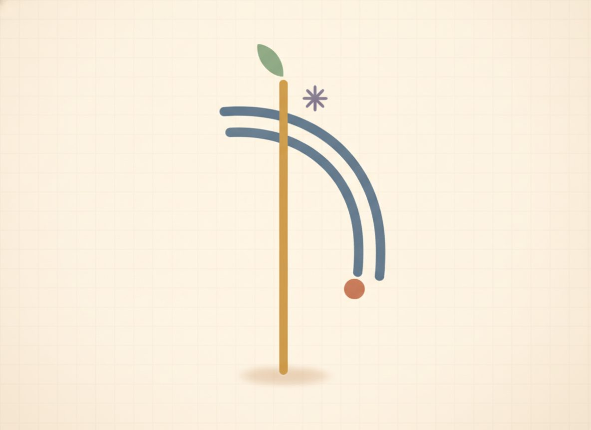

What is a function

Think about a vending machine for a moment. You press a button and you get exactly one snack. Press B4 today, you get pretzels. Press B4 tomorrow, you get pretzels again. Same button, same snack, every time.
That reliable matching of each button to one snack is the whole idea behind a function. A function is a dependable pairing: each thing you put in comes back matched to exactly one thing.

Notice what the machine does not promise. It doesn't promise that every snack has its own button. Two different buttons can both dispense pretzels, and that's a perfectly good machine. Annoying, maybe, but not broken.
What would count as broken is a button that gives pretzels sometimes and a soda other times. Press B4 and you can't tell what you'll get. That machine you'd kick.
That asymmetry is the entire lesson, so say it slowly. Two inputs landing on the same output is fine. One input giving two different outputs is the thing a function never does. Repeats are only a problem on the input side.
There's no formula anywhere in that vending machine, just a list of which button gives which snack. Hold onto that, because it's easy to assume a function has to be an equation. It doesn't. The pairing itself is the function, however it's written down.
Here's that idea as a picture you can draw. Put the inputs in a column on the left, the outputs in a column on the right, and draw an arrow from each input to the output it's matched with.
The reading rule follows the vending machine exactly: it's a function when every input on the left has exactly one arrow leaving it. Two arrows landing on the same right-hand value (two buttons, same snack) is fine. But two arrows leaving one left-hand value means that single input has two outputs, and that breaks it.
Now the same idea on a graph, which is where you'll meet it most often. On a graph, an input is an x-value: a spot along the horizontal direction. "All the points sharing one input" is a single vertical line standing at that x.
So sweep a vertical line slowly across the graph, left to right, and watch how many times it touches. If it never touches the graph in more than one place, every input has at most one output, and you've got a function. If a vertical line ever hits the graph in two places at once, that one input has two outputs, and it isn't.

This sweep has a name: the vertical line test. Walking your finger across the page as the imaginary line is a fine way to do it.
A quick way to carry this in your pocket: each input is paired with exactly one output, and repeats are only a problem on the input side. Say it back to yourself; you'll use it constantly.
New words
- 4.1.d1 Function: a pairing (a correspondence) that matches each input with exactly one output. The pairing can be given any way at all: a list of (input, output) pairs, a table, a graph, or a formula. What makes it a function is the one-output-per-input promise, not the form it comes in. (Heads-up: in 4.2 a formula like f(x)=3x−1 is called a rule. A rule is one common way to give a function's pairing, not the definition itself. A pair-list with no formula is still a function.)
- 4.1.d2 Input / output: what you feed in, and what comes back, written as a pair (input, output). The inputs form one set and the outputs form another; in 4.2 those sets get the names domain and range. (Later the input is also called the variable and the output its value.)
- 4.1.d3 Vertical line test: a graph is a function exactly when every vertical line hits it in at most one point (one hit, or none). If some vertical line hits the graph twice, that one input has two outputs, so it is not a function.
Read these next examples slowly, one at a time, and decide the answer in your head before you read the verdict. The whole skill is checking the input side, so practice spotting where to look.
Worked example
4.1.w1 Example 1: a set of pairs (no formula needed). Is {(1,2),(2,4),(3,6),(4,8)} a function? This is just a pairing, a list matching inputs to outputs, with no rule or formula written anywhere. That's allowed, because the pairing itself is the function. The inputs are 1, 2, 3, 4. Each one is different, each appears once, so each input is matched with exactly one output. Yes, a function.
4.1.w2 Example 2: a repeated output (still fine). Is {(1,5),(2,5),(3,5)} a function? The output 5 shows up three times, which can look suspicious at first. But check the inputs: 1, 2, 3, each appearing once, each with a single output. A repeated output is allowed. This is the "two buttons, same snack" case, so it's yes, a function.
4.1.w3 Example 3: a split input (broken). Is {(1,2),(1,3),(2,4)} a function? Look at the input 1: it's paired with 2 and also with 3. One input, two outputs, the broken-button case. No, not a function.
4.1.w4 Example 4: a table.
| input x | 0 | 1 | 2 | 0 |
|---|---|---|---|---|
| output | 4 | 5 | 6 | 9 |
A table is read the same way; just scan the input row for a repeat. Input 0 appears twice, giving 4 once and 9 once. That's two outputs for one input. No, not a function.
4.1.w5 Example 5: a graph (vertical line test). Take a non-vertical straight line such as y=2x+1. Sweep a vertical line across it and it touches in exactly one spot everywhere you put it. Function. Now take a circle centered at the origin, or a sideways "U" (a parabola opening to the right): a vertical line through the middle cuts across it in two places at once. Not a function. One straight line is the exception worth knowing. A vertical line such as x=3 is not a function: every point on it sits at the same input, x=3, so that single input is paired with infinitely many outputs. It's the cleanest possible example of one input with many outputs.
Now that you've seen the right reading a few times, here's the slip that snares almost everyone at first. It's natural to decide that any repeat at all kills a function, a sensible-sounding "no repeats allowed" rule. But go back to the machine: two buttons giving the same snack doesn't break anything.
So when a number repeats, don't reject it on sight. Look only at the input side, and ask whether one input is trying to give two different outputs. That, and only that, is what breaks a function.
One more place to be careful, and it's about direction. The test line is vertical, not horizontal. An input is an x, and the line that gathers all the points sharing one x stands straight up and down. If you find yourself sliding a line up and down the page instead of across it, you're testing the wrong thing.
Check yourself
- 4.1.c1 Make a set of three pairs that is not a function, and say which input breaks it. (One answer: {(2,1),(2,5),(3,9)}. The input 2 is paired with both 1 and 5, so that's the one that breaks it.)
- 4.1.c2 Here's a table where the output 7 shows up three times. Can it still be a function, and what would you have to check? (Yes, it can: a repeated output is fine. Check the inputs: as long as no input appears twice with different outputs, it's a function.)
- 4.1.c3 Why does the vertical line test, and not a horizontal one, decide it? (A vertical line gathers all the points that share one input; two hits means one input with two outputs, which is broken. A horizontal line would gather points that share one output, but two inputs sharing an output is allowed, so a horizontal line tests nothing about being a function.)
Mixing the kinds of problem feels harder than repeating one kind, and that's the point: switching between them is what makes the idea stick to next week. Every problem below has its answer at the end of the lesson, and if one stalls you, look back at the worked example it matches.
Practice
A. Sets of pairs — function or not? (give the reason)
- 4.1.1 {(0,1),(1,2),(2,3)}
- 4.1.2 {(2,4),(3,4),(5,4)}
- 4.1.3 {(1,1),(1,2),(3,4)}
- 4.1.4 {(-1,0),(0,1),(1,0)}
- 4.1.5 {(5,5),(5,6)}
B. Tables — function or not?
- 4.1.6 inputs 1,2,3,4 → outputs 2,2,2,2
- 4.1.7 inputs 3,4,3 → outputs 1,2,8
- 4.1.8 inputs -2,-1,0,1 → outputs 4,1,0,1
C. Descriptions / graphs — function or not?
- 4.1.9 "Each person is matched to their birth year." (input = person)
- 4.1.10 "Each birth year is matched to a person born then." (input = year)
- 4.1.11 The graph of a single non-vertical straight line.
- 4.1.12 The graph of a circle.
- 4.1.13 The graph of the vertical line x=3.
- 4.1.14 "Each student is paired with the one chair they sit in." (input = student)
AnswersTry each one yourself first, then open to check.
- Function — inputs 0,1,2 all distinct.
- Function — output 4 repeats, but inputs 2,3,5 are distinct (two buttons, same snack).
- Not a function — input 1 gives both 1 and 2.
- Function — output 0 repeats, but inputs -1,0,1 are distinct.
- Not a function — input 5 gives both 5 and 6.
- Function — inputs all distinct; identical outputs are allowed.
- Not a function — input 3 appears twice with outputs 1 and 8.
- Function — inputs -2,-1,0,1 distinct; repeated output 1 is fine.
- Function — each person has exactly one birth year.
- Not a function — a year can match many people (one input → many outputs).
- Function — a non-vertical line passes the vertical line test (each x has exactly one y).
- Not a function — a vertical line through it hits twice.
- Not a function — every point shares the input x=3, so that one input has infinitely many outputs; it fails the vertical line test.
- Function — each input (a student) is paired with exactly one output (a chair). It's a plain pairing, no formula needed.